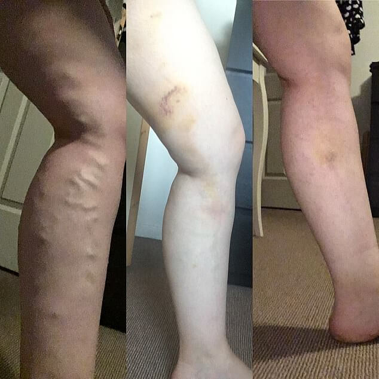
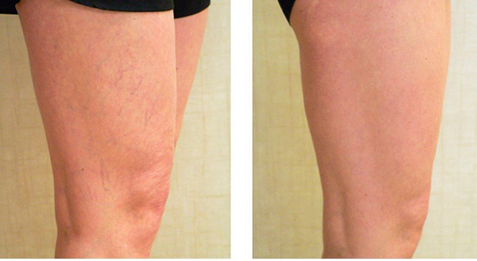
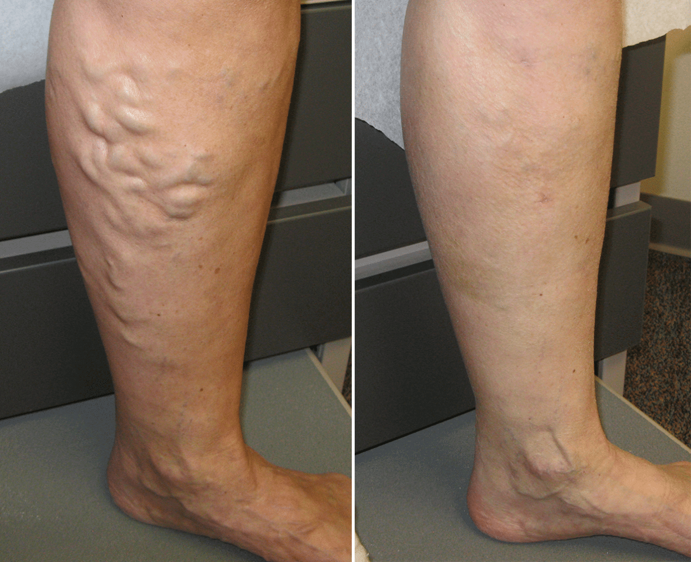

![]()
¿Es posible curar las venas varicosas sin cirugía?
Después de publicar el artículo sobre varices, recibimos más de 1,500 correos electrónicos con preguntas sobre esta enfermedad. A algunas de ellas responderá Enrique Cruz, MD.
Comentario del doctor Enrique:
Enrique Cruz — MD, docente, jefe del Departamento de Enfermedades Nerviosas y Neurocirugía de la Facultad de Medicina de Harvard.
'No se puede evitar las varices en el 90% de los
casos'
El estilo de vida sedentario puede arruinar incluso las piernas sanas. La sangre sube por las venas, llegando al corazón y los pulmones. Debido a la gravedad y las venas apretadas, el líquido tiende hacia abajo o se estanca. Para evitar que la sangre se acumule en las extremidades, hay válvulas en las venas que se abren en la dirección del movimiento de la sangre y se cierran para evitar que regrese. Cuando las válvulas funcionan mal y la sangre fluye por las venas hacia abajo, los vasos no la acomodan, se estiran y sobresalen por encima de la piel.
La herencia es el desencadenante de las varices. No se transmite la enfermedad en sí, sino la debilidad de las paredes de las venas. Incluso si tus padres estaban bien, entonces esta debilidad de las paredes puede transmitirse a ti de cualquier pariente.
Las venas varicosas ocultas son aterradoras porque no se manifiestan externamente y se puede perder fácilmente las primeras etapas de la aparición de las venas varicosas. Si esto sucede, entonces es posible tomar los medicamentos equivocados toda la vida, pensando que te congelaste o estiraste los músculos nuevamente.
Si al final del día sientes pesadez, hinchazón y entumecimiento, entonces estas son los primeros síntomas de varices.
En ningún caso se puede retrasar la visita al médico. Y si el médico dice que es una condición normal, hay que cambiar de médico y volver a hacerse las pruebas.
Las venas varicosas son un camino directo hacia el desarrollo de trombosis y tromboflebitis. Un coágulo de sangre desprendido puede causar infarto, accidente cerebrovascular o embolia pulmonar. Hacer caso omiso a las varices es mortal. La congestión en las venas conduce a cambios cicatriciales y úlceras que pueden degenerar en tumores malignos.
El principio de tratar cualquier varices (hereditaria, oculta y completamente descuidada) es aproximadamente el mismo. Es recomendable hacer ejercicio constante para las piernas, tomar una ducha de contraste, visitar al médico mensualmente y usar .
ayuda a prevenir la cirugía, inhibe el desarrollo de la enfermedad, y actúa sobre el foco de inflamación. Durante los ensayos clínicos, el 99.6% de los participantes se curaron de los síntomas de las venas varicosas, se deshicieron de los nódulos venosos y las 'arañas' vasculares. Durante todo este tiempo, ningún medicamento alcanzó el mismo porcentaje serio que .
Últimamente noto que la frágil salud de los pacientes está dañada por los charlatanes que venden 'remedios milagrosos' de varices. Por lo tanto, les pido que tengan cuidado con las falsificaciones de . Ahora hay muchos estafadores en el mercado farmacológico que están dispuestos a vender cualquier cosa fingiendo que es un medicamento. Estén alertos: el medicamento siempre debe tener un sitio web oficial.
Queridos lectores, ¡no descuiden sus piernas hasta la cirugía y cuiden su salud!
A petición del Dr. Enrique, en nombre de la editorial adjuntamos el enlace correcto al sitio web oficial del fabricante de .
- Desequilibrio hormonal: cómo reconocerlo y prevenirlo
- Revisión médica: qué es, quién y por qué la necesita
- Qué comer para la salud vascular
- Equilibrio saludable: cómo construir su trayectoria laboral y no quemarse en el trabajo
Foto: Getty Images
¡Gracias por publicar mi carta! Comencé a usar y realmente me ayudó. Compruébenlo ustedes mismos.
La semana pasada recibí una respuesta del Dr. Enrique a mi carta. Muy amable de su parte. Tengo varices hereditarias y decidí pedir . Lo uso solo unos días, y por las noches las piernas me dejaron de hincharse. Qué padre!
Mi esposa tenía varices. Digo 'tenía' porque hace dos años se le desprendió un coágulo de sangre y no pudieron salvarla. Cuando noté que a nuestra hija mayor también le empezaron a aparecer varices, la llevé de la mano a los médicos, pero todos dijeron que no se podía hacer nada con la herencia. Hace unos meses pedí para ella y ayudó a mi niña! No pude salvar a mi esposa, pero mi hija sigue viva.
También tengo varices ocultas. Pedí el remedio, quizás ayude…
¡Me ayudó!! En solo un curso, ME PUSE DE PIE
Yo siempre sufrí varices. Este es padrísimo. Cuesta poco, el resultado es fantástico
Me siento mucho frente a la computadora cruzando las piernas. Luego comencé a notar que las piernas parecían superhinchadas. No le di importancia a esto y fui al médico solo cuando las venas ya habían salido. El médico no dijo nada bueno, pero el Dr. Enrique respondió en detalle en una carta a mi pregunta y me aconsejó que probara . Me sorprendió gratamente el precio y el efecto de la aplicación. Literalmente en un curso comencé a sentirme mejor
Gracias doctor! ¡Mis piernas son hermosos y saludables de nuevo!
